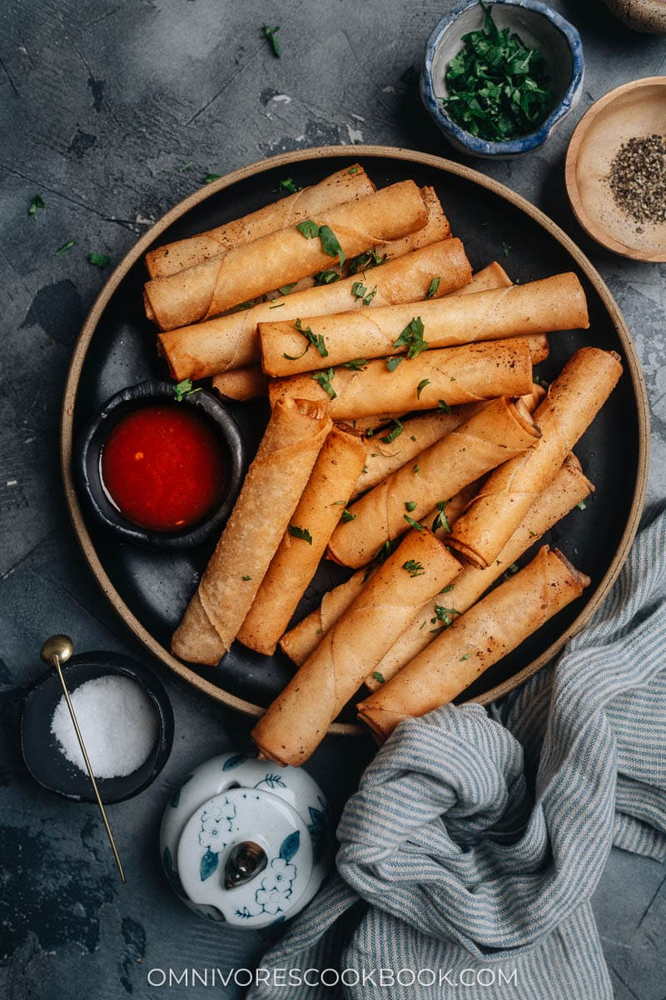

Lumpia Shanghai

Description
A lumpia Shanghai recipe I know all Filipinos are proud of! Lumpia (the Shanghai version) is a type of egg roll,
but it's mainly filled with meat. You could use pork, beef, or both. It's a very easy and yummy recipe that's great
as finger food. I like to use both beef and pork, but you can substitute one for the other. We serve these spring
rolls with sweet and sour sauce, soy sauce with lemon, or banana ketchup.
Ingredients
- 1 lb. ground pork
- 1 lb. ground beef
- 1 medium onion, finely chopped
- 1 carrot, grated
- ¼ cup soy sauce
- 2 tbsp. salt
- 1 ½ tbsp. garlic powder
- 2 ½ tsp. black pepper
- One 16 oz. package spring roll wrappers
- ¼ cup water
- 1 ½ qt. oil
Steps
- Combine ground pork, ground beef, onion, and carrot in a large bowl; mix well with hands. Gradually blend in soy sauce, salt, garlic powder, and pepper until incorporated.
- Working one at a time, lay a wrapper on a flat surface with a corner pointing at you. Place about 2 tablespoons filling in a line, no thicker than your thumb, across the center of the wrapper. Moisten the edges of wrapper with water. Fold the bottom edge of wrapper snugly over filling. Fold in the left and right sides of wrapper towards the center. Roll up tightly to seal in filling.
- Heat oil in a deep fryer or heavy skillet to 375°F
- Working in batches, fry lumpia in hot oil, turning once, until golden brown, 3 to 4 minutes. Drain on a paper towel-lined plate. Cut lumpia in half, or serve as-is with dipping sauce.